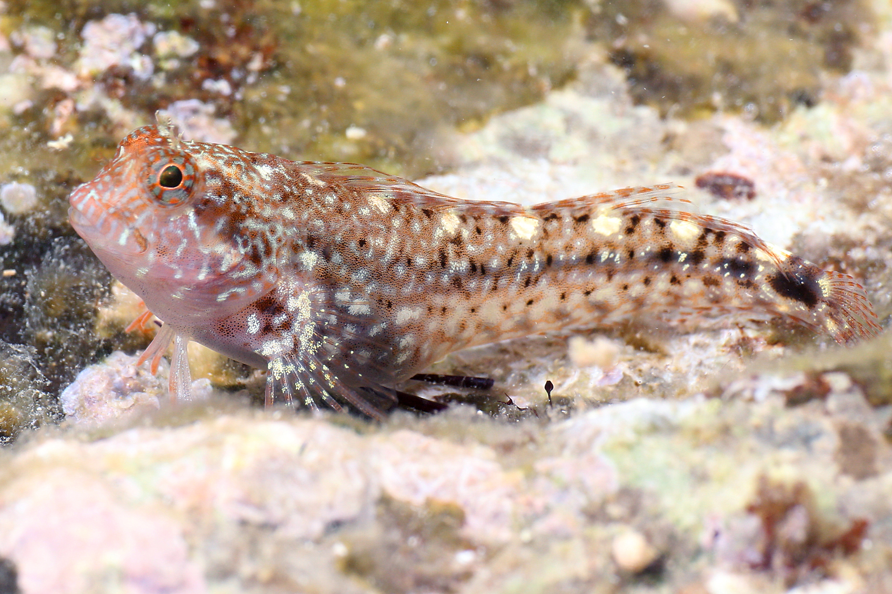

Содержать группой из самца и самок или по одиночке.
Питается в основном заморозкой (см. ниже "Кормление").
Parablennius zvonimiri

Собачка Звонимира:
Максимальная длина тела до 7 см, обычно меньше.
Для аквариумов от 20л.
Содержать группой из самца и самок или по одиночке.
Питается в основном заморозкой (см. ниже "Кормление").
Parablennius incognitus
Собачка Инкогнита:
Длина тела до 8 см.
Для аквариумов от 40л.
Содержать группой из самца и самок или по одиночке.
Питается в основном заморозкой (см. ниже "Кормление").
Aidablennius sphynx
Собачка Сфинкс:
Длина тела до 8 см.
Для аквариумов от 40л.
Содержать группой из самца и самок или по одиночке.
Питается в основном заморозкой (см. ниже "Кормление").
Palaemon elegans
Креветка Полемон Каменный:
Длина тела до 5 см.
Для аквариумов от 20л.
Содержать группой или по одиночке.
Питается в основном заморозкой (см. ниже "Кормление"), подбирает
остатки пищи в аквариуме, чистильщик.
Brachynotus sexdentatus
Краб Brachynotus sexdentatus:
Максимальная длина панциря до 1.8см, обычно до 1см
Для аквариумов от 20л.
Содержать группой или по одиночке.
Питается в основном заморозкой (см. ниже "Кормление"), подбирает
остатки пищи в аквариуме, чистильщик.
Diogenes pugilator
Рак-отшельник Диоген:
Длина до 3см.
Для аквариумов от 20л.
Содержать по одиночке или группой в аквариумах от 50л.
Питается в основном заморозкой (см. ниже "Кормление"), подбирает
остатки пищи в аквариуме, чистильщик.
Кормление
Для долгой и счастливой жизни описанных здесь черноморских животных
следует кормить преимущественно заморозкой.
Я кормлю пастой из магазинной тигровой (серой) креветки:
замороженную креветку тру на терке и фасую порционно в инсулиновые
шприцы (размер шприца зависит от количества животных) без иголки на
пару недель вперед, 1 шприц - 1 кормление, шприцы можно использовать
многократно.
В пасту можно добавлять витамины и спирулину(у меня толченая из
аптечных таблеток).
Кормлю адресно размороженной пастой, воду не пачкает, ошметки по
аквариуму не летают.
Дополнительно черноморских животных можно подкармливать сухим
кормом. Сразу от корма рыбы могут отказываться, со временем начнут
брать сами или можно приучить к корму, подмешивая его в заморозку.
Черноморских собак нужно кормить ежедневно заморозкой.
Черноморских креветок и крабов для долгой жизни тоже нужно кормить
заморозкой.